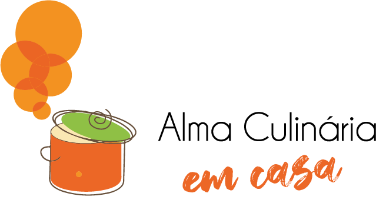

Cozinha Criativa: Receitas Incríveis para Você Experimentar
A culinária é uma arte que nos cativa com seus sabores, texturas e aromas, transcendendo fronteiras e culturas. Ela nos convida a explorar o mundo, criar memórias e compartilhar momentos especiais em torno da mesa. Junte-se a essa jornada gastronômica e descubra sua magia.
